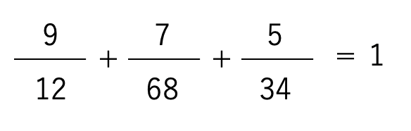

1を作る問題
答えは

最初、Javascriptで解こうと思ったけど技量不足でできず、
数学ツールの揃っているPythonで解いた。
コードはこんな感じ。
import itertools ←モジュールを呼び出し
list = [1,2,3,4,5,6,7,8,9] ←数字のリスト
p = itertools.permutations(list, 9) ←全ての順列をリスト化
for v in p: ←全ての順列について代入して計算
(a,b,c,d,e,f,g,h,i)=v
k=a/(10*b+c)+d/(10*e+f)+g/(10*h+i)
if k == 1: ←答えが1だったらその順列を出力
print(v)
出力はこんな感じ。分数の順番が変わるだけで、基本は一緒。
=====
(5, 3, 4, 7, 6, 8, 9, 1, 2)
(5, 3, 4, 9, 1, 2, 7, 6, 8)
(7, 6, 8, 5, 3, 4, 9, 1, 2)
(7, 6, 8, 9, 1, 2, 5, 3, 4)
(9, 1, 2, 5, 3, 4, 7, 6, 8)
(9, 1, 2, 7, 6, 8, 5, 3, 4)
=====
プログラミング練習部屋へ